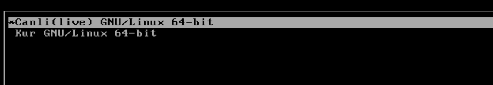
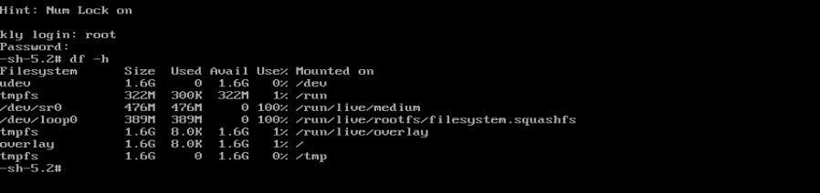
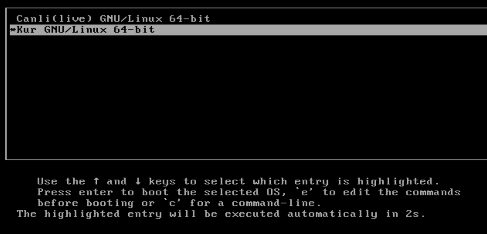
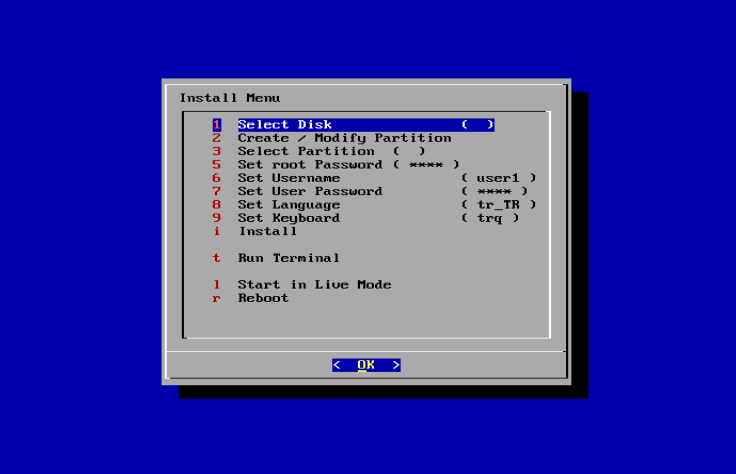
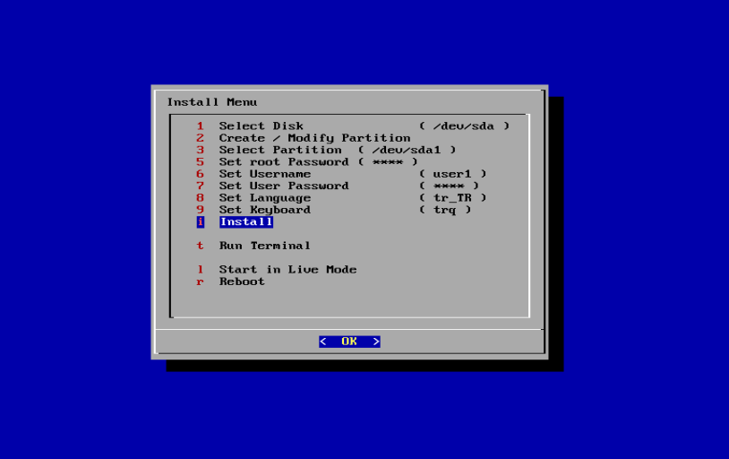
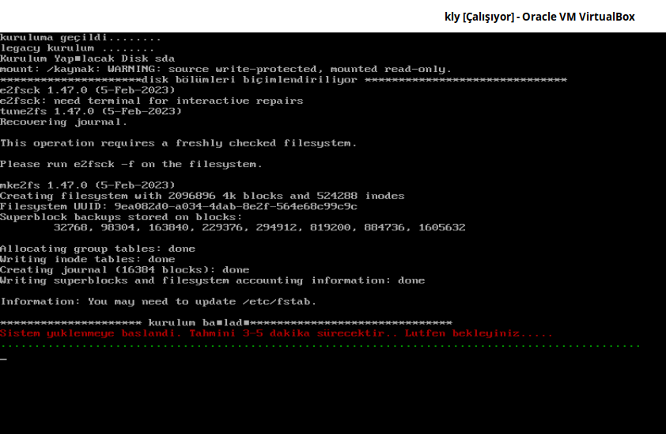
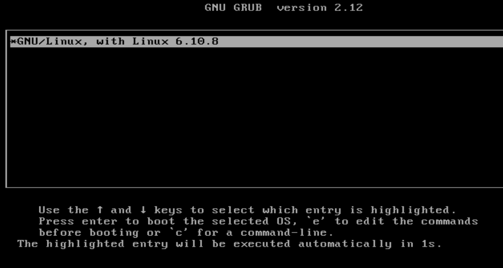
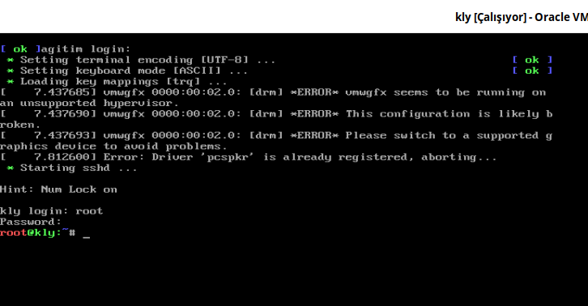

Yaptığımız sistem ISO haline dönüştürüldü ve artık test etme ile inceleme aşamasına geçtik. ISO hazırlama bölümünde aşağıdaki komutla ISO’yu oluşturduk:
grub-mkrescue $distro/iso/ -o $distro/kly.iso
Oluşturulan ISO dosyası $distro/kly.iso konumunda yer almakta olup, bu konum $HOME/distro/kly.iso dizinine karşılık gelmektedir.
Bu dokümanda anlatılan paketlerin kly Paket Sistemiyle hazırlanmış Temel Sistem isosu hazırlandı. İsoyu https://github.com/kendilinuxunuyap/kly-base-distro/releases/download/current/kly-base-distro.iso adresinden indirebilirsiniz.
Şimdi hazırlanan ISO’yu QEMU veya VirtualBox kullanarak çalıştıralım. Ekran görüntüleri aşağıda verilmiştir.
Canlı(live) Sistem Kullanımı¶




Canlı(live) sistem çalıştırıldığında overlay live bir sistemin açıldığını görmekteyiz. Canlı(live) sistemde kullanıcı adları ve parolaları;
Kullanıcı: root Parola: 1
Kullanıcı: live Parola: live
Sistem Kurulumu¶
Hazırlanan ISO ile birlikte, farklı kurulum araçları da gelebilir. Bu araçlar, çeşitli kurulum yöntemlerini destekleyebilir. En sık kullanılan kurulum yöntemleri şunlardır:
Tek bölüme sistem kurulumu
UEFI sistem kurulumu (boot + sistem)
Bu bölümde, tek bölüm kurulum ve boot + sistem şeklinde iki farklı kurulum yöntemi sırayla anlatılacaktır. Anlatılan yöntemler, farklı kullanıcı senaryolarına cevap verebilecek şekilde tasarlanmıştır.
Ancak dikkat edilmesi gereken önemli bir nokta şudur: Her yöntemi ayrı ayrı son kullanıcıya seçenek olarak sunmak, özellikle tecrübesiz kullanıcılar için kafa karıştırıcı olabilir. Örneğin:
Kullanıcı, kurulum sırasında EFI seçeneğini işaretlediğinde fakat sistem aslında Legacy BIOS ise, ya da tam tersi durumda, yanlış seçim yapabilir.
Ayrıca, sda ve nvme diskler arasında farklı kurulum senaryoları gerekebilir.
Bu nedenle hazırlanan kurulum sistemi, aşağıdaki tüm olası senaryolara otomatik cevap verecek şekilde tasarlanmıştır:
Legacy BIOS → sd* disk tipi
Legacy BIOS → nvme* disk tipi (desteklenmemektedir)
UEFI → sd* disk tipi
UEFI → nvme* disk tipi
Not
Bu senaryolara göre hazırlanan kurulum scripti, dialog aracı kullanılarak oluşturulmuştur. İlgili kurulum scriptleri, base-file paketinin içindeki files.rar arşivinde yer almaktadır.
Bu bölümde, sadece Legacy BIOS ve UEFI sistem kurulumunun genel adımları anlatılacaktır. Bu yöntemleri kendi ihtiyaçlarınıza göre düzenleyerek kullanabilirsiniz.
Sistemin kurulumu için resimlerde görünen sıraya göre seçimler yapmalıyız.




Kurulum menüsünde kullanıcı adları ve parolaları, klayve varsayılan olarak;
Kullanıcı: root Parola: 1
Kullanıcı: user1 Parola: 1
Dil : tr_TR
Klavye : trq
menüden değişiklik yapabilirsiniz. Değişiklik yapmadan sadece kurulum diskini ve disk bölümünü seçip Install(Yükle) işlemi yapabilirsiniz.




Sistemin Çalışması¶
Sistem kurulumu gerçekleştiğinde sistem resimde görüldüğü gibi açılmalıdır.


Sisteme root kullanıcısı olarak giriş yapıldığı görülmektedir.


Oluşan Sistemin Değerlendirmesi¶
Mevcut sistem Debian ortamında derlenmiştir. Paketler derlenirken, Debian’a özgü fakat bizim sistemimiz için gerekli olmayan bazı ayarlar ve bağımlılıklar da yeni sisteme taşınmış olabilir. Bu tür taşınan unsurları ortadan kaldırmak için, tüm paketlerin tamamen kendi sistemimiz üzerinde yeniden derlenmesi gereklidir.
İlk derleme süreci Debian üzerinde yapılmış olsa da, sonraki derleme adımı mutlaka hazırladığımız yeni sistemde gerçekleştirilmelidir. Bu yöntem, sistemdeki eksiklikleri tespit etmek ve gözden kaçan bağımlılıkları ortaya çıkarmak açısından kritik öneme sahiptir.
Derleme işlemimin yapılabilmesi için oluşturulan sistemdeki paketlere ek paketler derlenmesi gerekmektedir. Bu paketlerin en önemlileri gcc, binutils, mpfr, libmpc, zlib, libisl, make'dir.
Bu dokümanın amacı, bir sistemin nasıl derlenip çalıştırılacağını adım adım bir rehber olarak sunmaktır. Bundan sonraki aşamada ise, tüm paketlerin yeni sistem üzerinde eksiksiz bir şekilde derlenmesi hedeflenmelidir.
Tüm paketler yeni sistemde başarıyla derlendikten ve sistem sorunsuz şekilde çalıştıktan sonra, x11 ortamını derleme aşamasına geçilebilir. Dokümanda yer alan paket derleme betikleri kullanılarak x11 kolaylıkla derlenebilir. Bu noktaya kadar sorunsuz ilerlenmişse, x11’in derlenmesi yalnızca zaman alacak bir işlemdir.
x11'in en temel paketi xorg-server, mesa, llvm, cairo paketleridir. Bu paketlere aşağıdaki adreslerden ulaşılabilir.
xorg-server: https://www.x.org/releases/individual/xserver/
Tüm paketleri derlesek bile xorg-server, mesa, llvm, cairo paketleri düzgün ve uyumlu versiyonları olmadığı zaman x penceremiz açılmayacaktır.
Buradaki tüm paketler ve bağımlılıkları derlendikten sonra Xorg:0 şeklinde elle çalıştırarak hata ayıklama yapılmalıdır.
Bu dokümanın devamı niteliğinde temel bir x11 ortamı nasıl derleneceğini anlatan bir doküman hazırlamayı planlamaktayız.